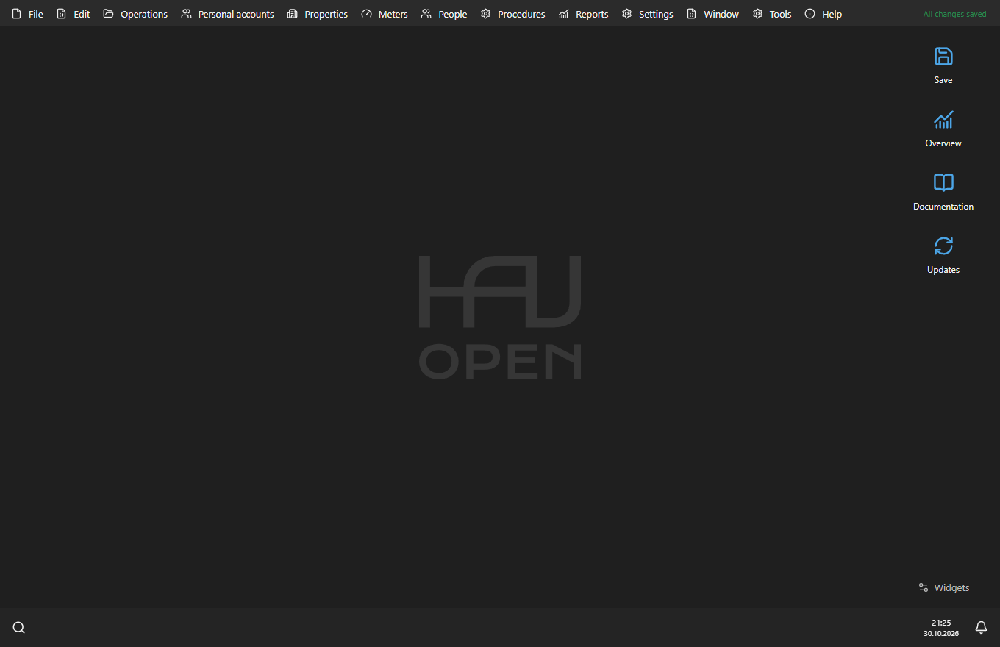
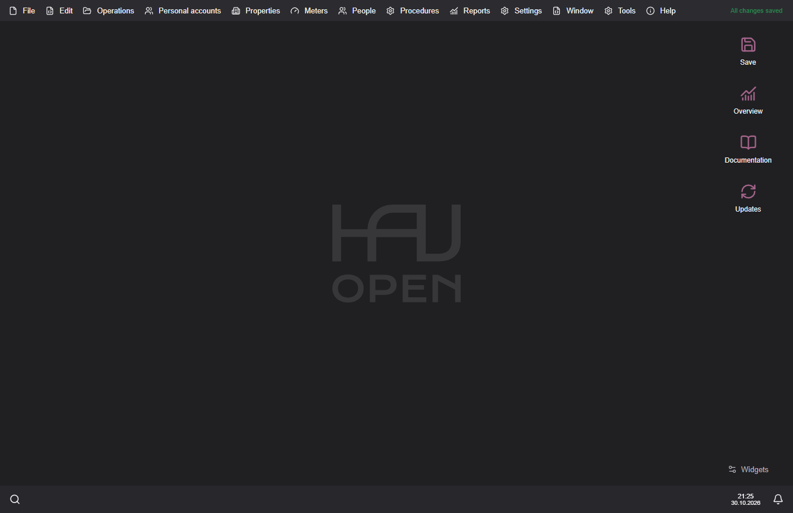

OpenHaU user guide
OpenHaU is an offline utility accounting application for housing associations. The interface supports English, Romanian and Russian. Accounting uses MDL.
Contents
- Installation and updates
- Organisation and personal accounts
- Monthly workflow and reports
- Receipts and PDF
- Database files, protection and backups
- Local API
- Troubleshooting
First steps
- Create a database or add an existing ODB file from the welcome screen.
- Check organisation details, accounts, connected services, tariffs and meters.
- Select the billing period and enter readings, occupancy changes and payments.
- Review the reports and prepare receipts for the selected month.
- Save the database and keep an independent backup.

Windows and macOS
The application keeps the same accounting data on both platforms. Choose the package for your operating system and keep a backup before moving a working database between application versions. A newer application can migrate an older database; an older application may refuse a newer schema.
